RTR: Imperium Surrectum
RTR: Imperium SurrectumMinor Greeks 1: the Northern League
2023-08-15 · ahowl11

Hello! Today begins a new series of DD's created by our very own historian @Mausolos of Mylasa. Over the course of this week, you will all be taken on a historical journey that showcases our new Minor Greek Factions. Not only will you be provided with the history of these nations and the historical context of the situations that they were in, but also a showcase of their units, map position and faction symbols. Today we begin with the Northern League!
THE NORTHERN LEAGUE
In 281 BC, the diadoch Seleukos defeated his rival Lysimachos in a huge battle on the plains of Kyros (Kurupedion) in Lydia. Seleukos I was on the cusp of reuniting Alexander's empire: Anatolia was won, Thrace, Macedon and Greece were now open to him - only Egypt remained in the hands of Ptolemaios II, son of his friend Ptolemaios I. Ptolemaios II's half-brother Ptolemaios Keraunos, "the lightning", even accompanied the Seleucid army when they crossed into Europe. Yet, Ptolemaios Keraunos betrayed Seleukos and murdered the old man to take the throne of Macedon for himself.
What happens next seems like it was the will of the Moirai, the three sisters who controlled human destiny: A huge army of Celts invaded Macedon and killed Keraunos in battle. Chaos ensued in Greece, but eventually, the Aitolian League, supported by Boiotians and Athenians, defeated the invaders and forced them back north. There, the Celtic army split: One part returned to their old home in the Balkans and became the Scordisci, one established the kingdom of Tylis in Thrace and the third offered their services to Nikomedes, king of Bithynia. At this time, Nikomedes' position was threatened by Antiochos I, son of Seleukos, who planned to stabilise his rule and then conquer Bithynia and the Greek cities around the Bosporos. Therefore, Nikomedes forged an alliance with Byzantion, its dependent ally Chalkedon, Kios and Herakleia Pontike - including its own dependencies, Kieros and Tieion. To increase their chances, they invited the Celtic host that would become known as the Galatians to enter Asia. Sinope supported the league without becoming an official member and the fledgling kingdom of Pontos probably also joined the confederation.
The Hellenistic World in 281 BC
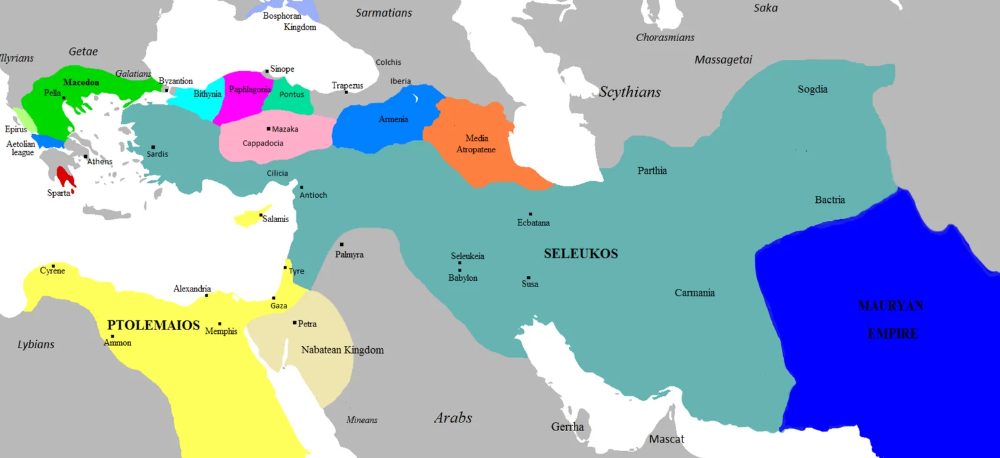
Though Antiochos would eventually defeat the Galatians with the help of his elephants (probably in 275 BC), the league stood strong and Seleucid expansion was halted. Yet, already in the 260s BC, it began to disintegrate: Pontos secured the city of Amastris on the coast of the Black Sea, a former possession of Herakleia. Subsequently, the Herakleiotes forced Pontos out of the league. The conflict reached another level in 255 BC, when Nikomedes died. Civil war broke out: In his last will, Nikomedes had appointed Kios, Byzantion and Herakleia as well as the Antigonids and Ptolemies as guardians of his minor sons, while his elder son Ziaelas had been excluded from the throne. Ziaelas, however, secured support from Armenia, possibly Pontos and the Tolistobogii, one of the Galatian tribes. Of the guardians, only Herakleia made a real effort to save Nikomedes' minor sons, and a Herakleiote fleet led a preliminary strike against Pontos to prevent them from joining the war. The fighting was largely inconclusive, but Ziaelas did enough to secure the throne.
At the same time, in the 250s BC, Byzantion was quarrelling with the so called Pontic Pentapolis on the western shore of the Black Sea over the trade routes into the Aegean. When the Pontic cities decided to build a new harbour at Tomis which would serve as the central reloading point for all ships that sailed between the Aegean and the Black Sea, Byzantion felt its advantegous position on the Bosporos was threatened. Though some of the Pontic cities were colonies of Herakleia, the Herakleiotes sided with their ally Byzantion and called the Ptolemies for help. While a Seleucid counter offensive recorded some success in Thrace, the Ptolemaic-Herakleiote fleet decisively defeated the Pontic Pentapolis and preserved Byzantion's monopoly.
The position of Kios, now Gemlik, on the Sea of Marmara:
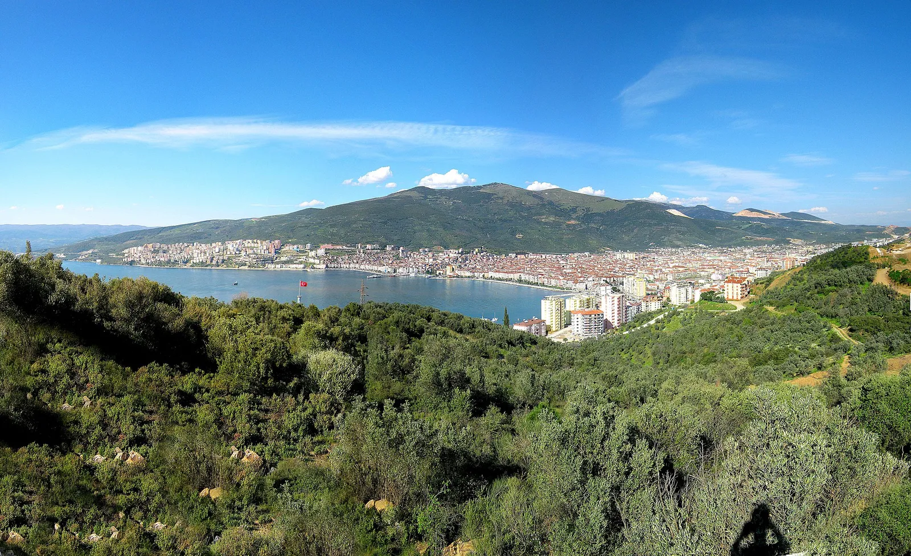

BYZANTION
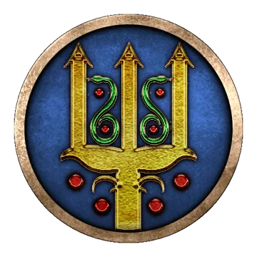
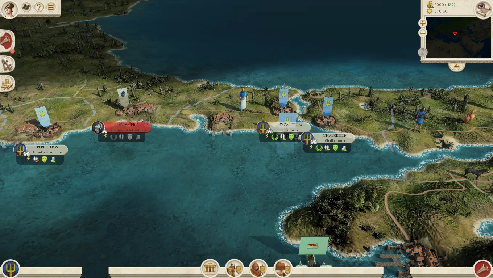
Byzantine Epibatai
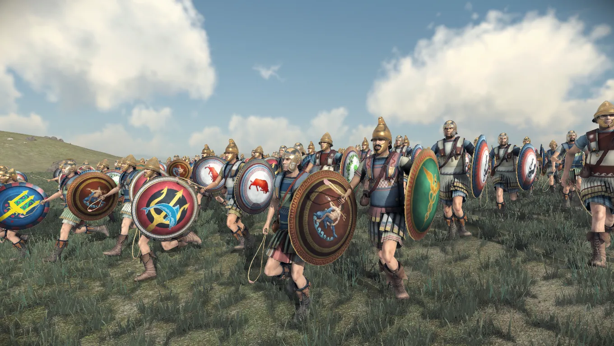
KIOS
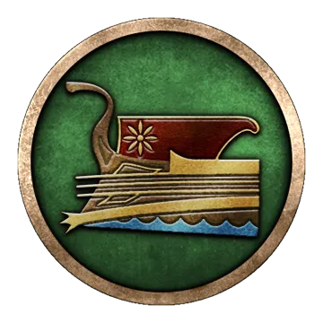
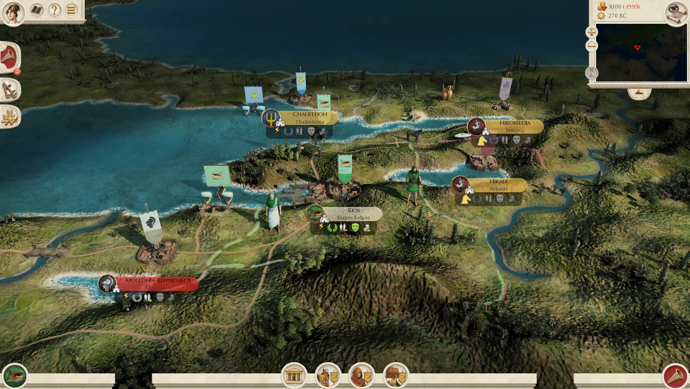
Kian Archers
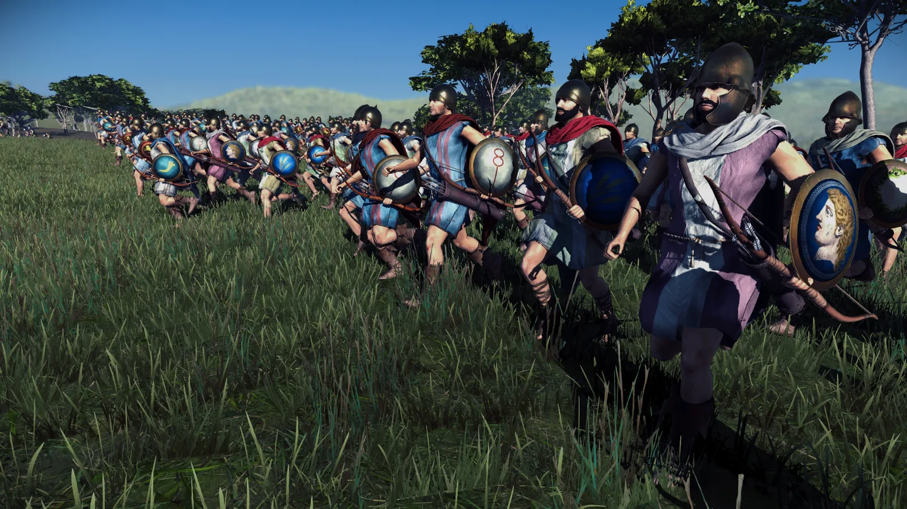
HERAKLEIA PONTIKE
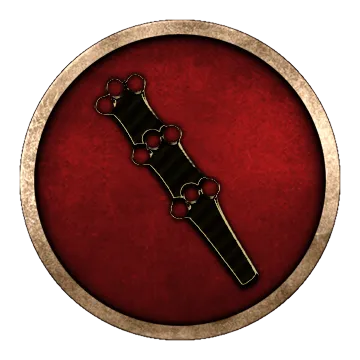
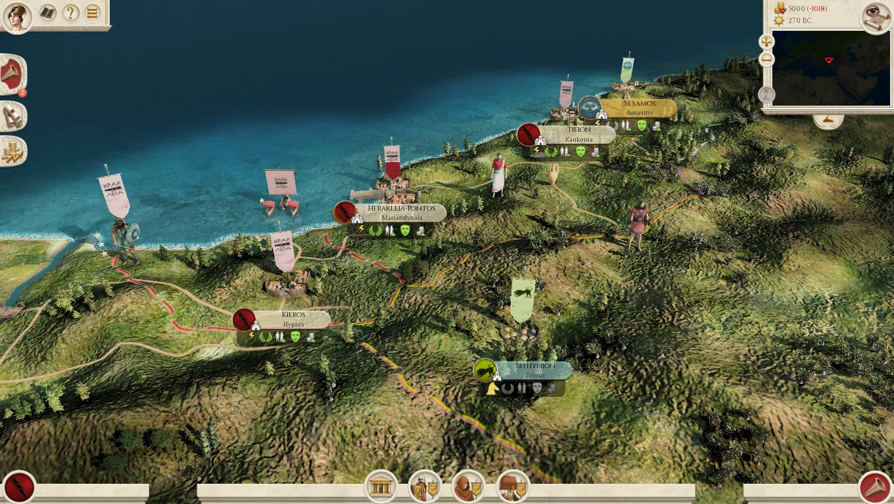
Herakleiote Horophylakes
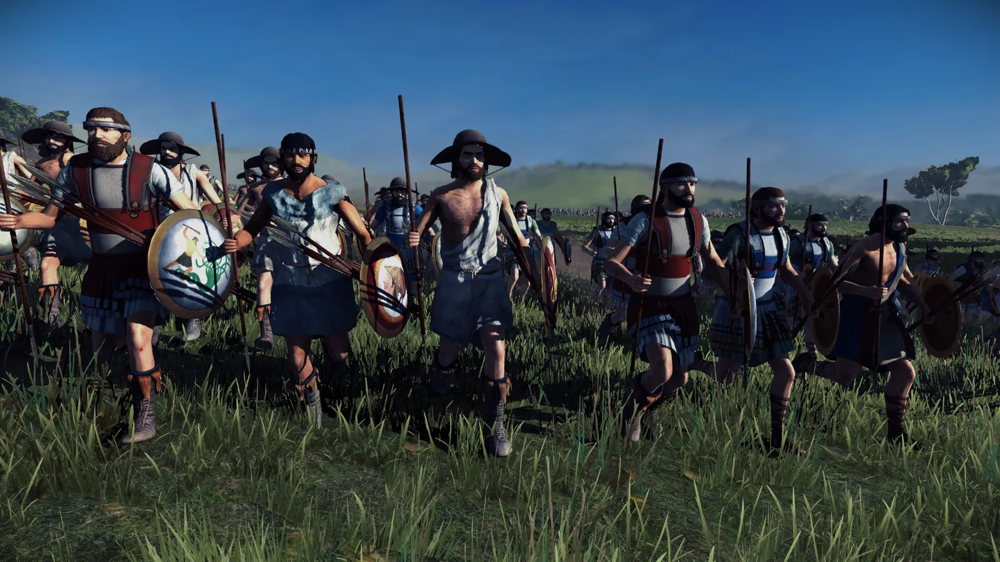
Herakleiote Epibatai
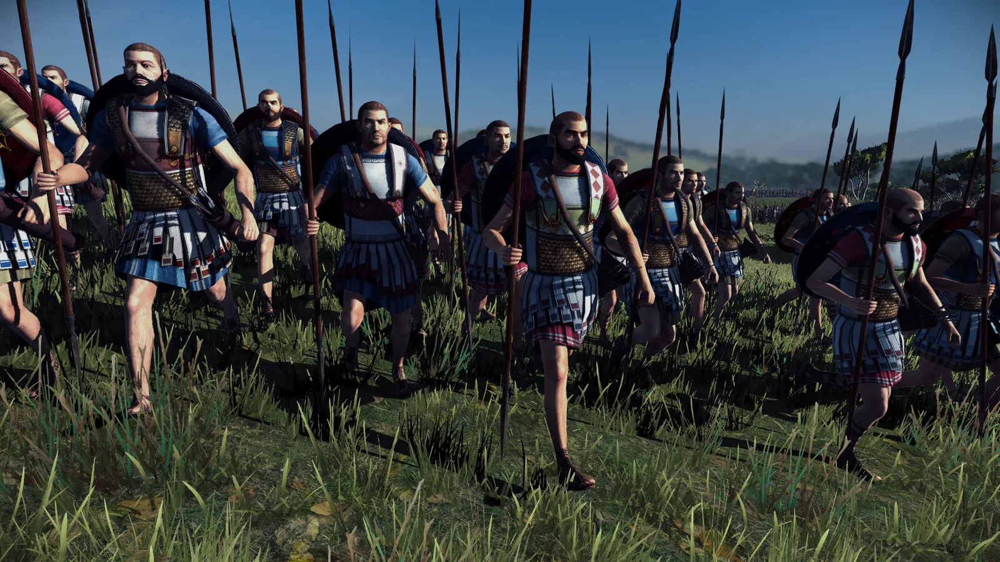
Herakleiote Hoplites
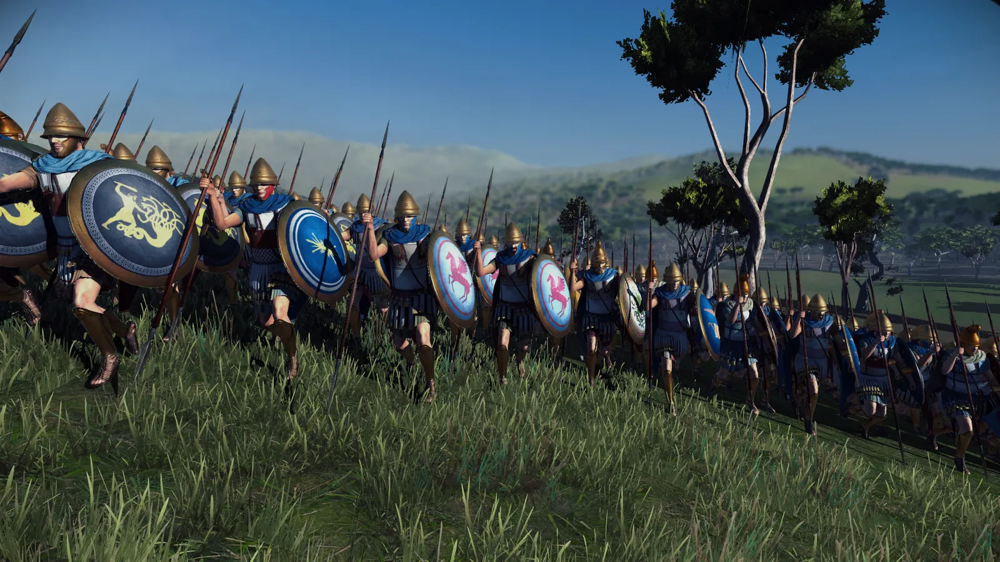
Mariandynian Javelinmen
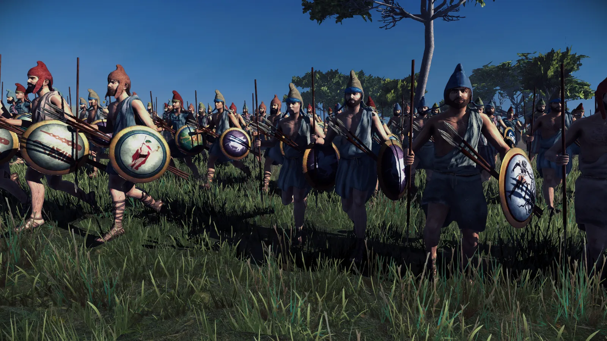
This concludes the first DD of our Minor Greek factions, we hope you have enjoyed it. Stay tuned the rest of this week as we continue to reveal these awesome factions, and lead up to the next RIS weekends showcase by @Red Zed!